PR Spotlight
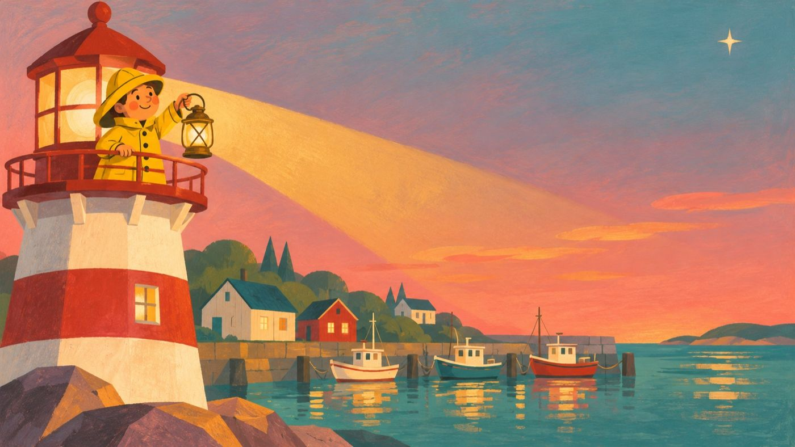
Art: Mid-century gouacheEvery merged PR gets a picture of the people behind it, and a lesson
A free-time project by Nhat, built with Claude Code · github.com/ngnnah/pr-spotlight
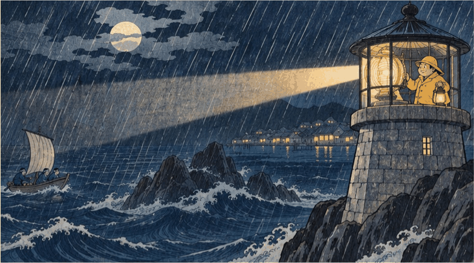
Reviewers keep bad code off the rocks, and nobody sees them
A review catches the problem before it reaches prod
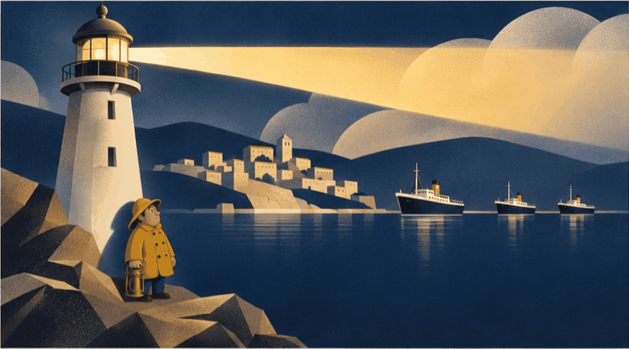
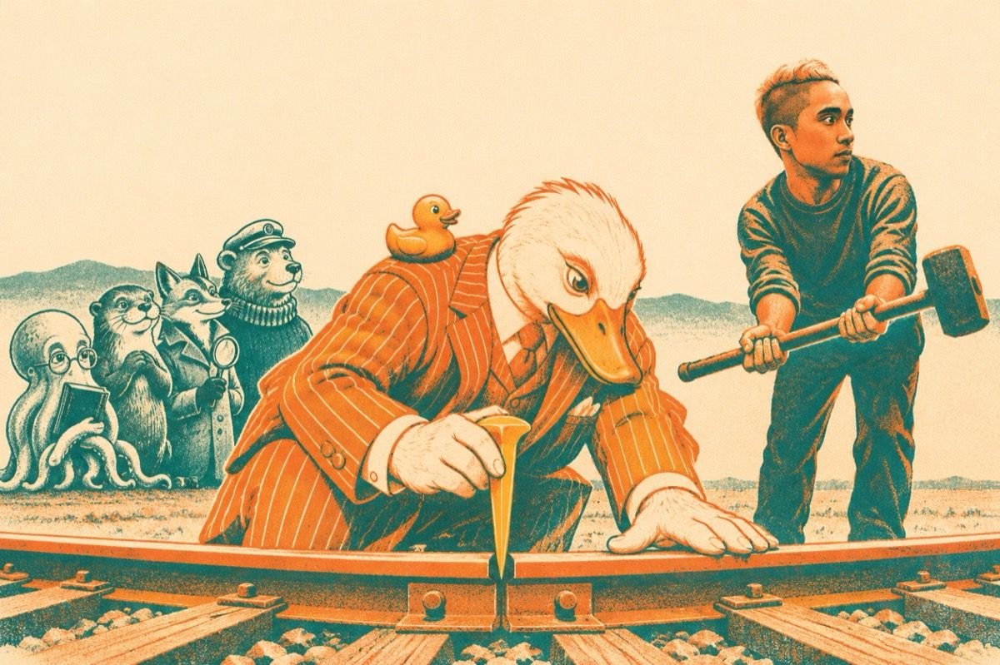
On a dev → main promotion, the beam turns to the reviewers
Example: a release to prod, reviewed by a teammate (the duck)
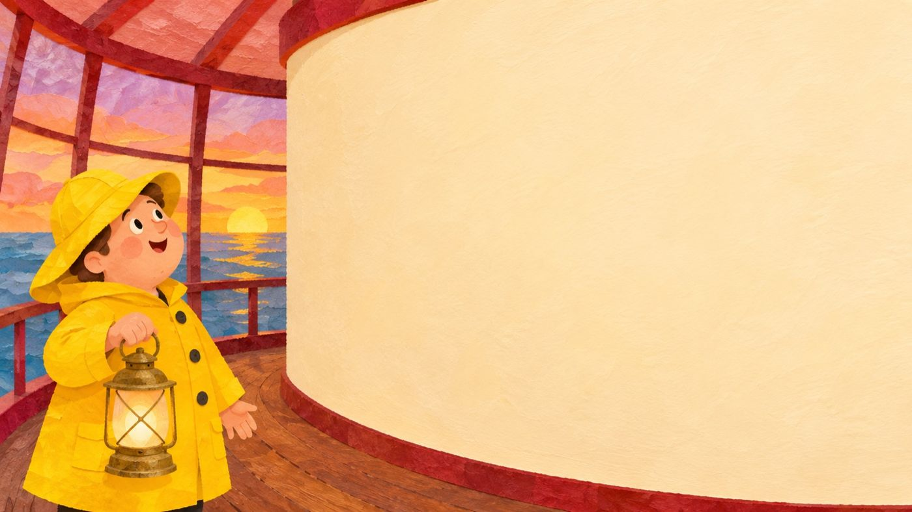
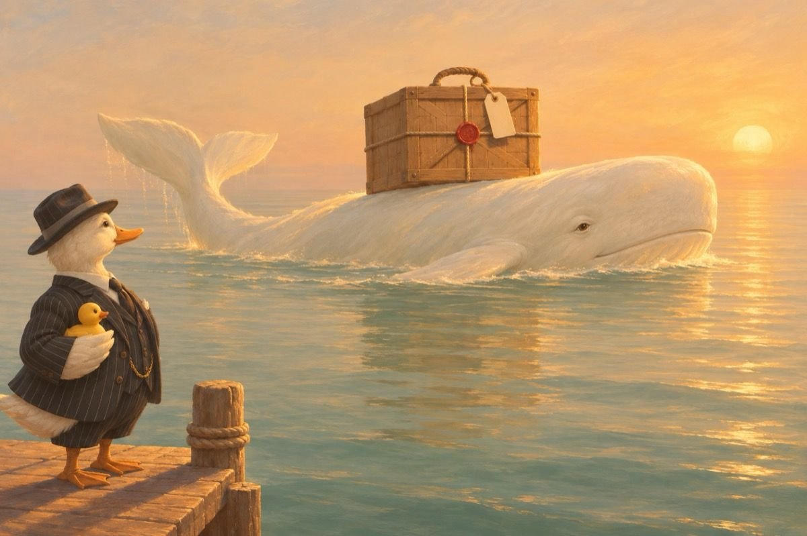
Siesta light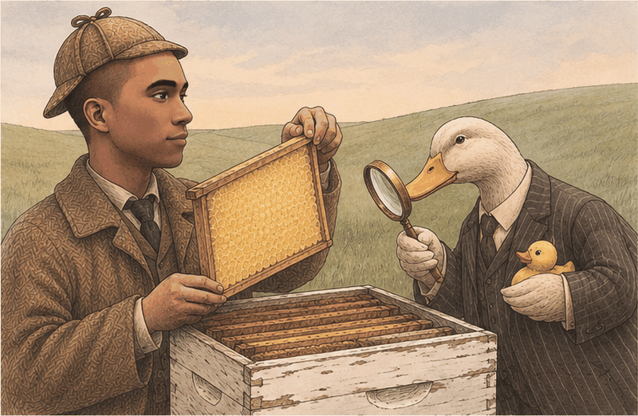
Ink and watercolor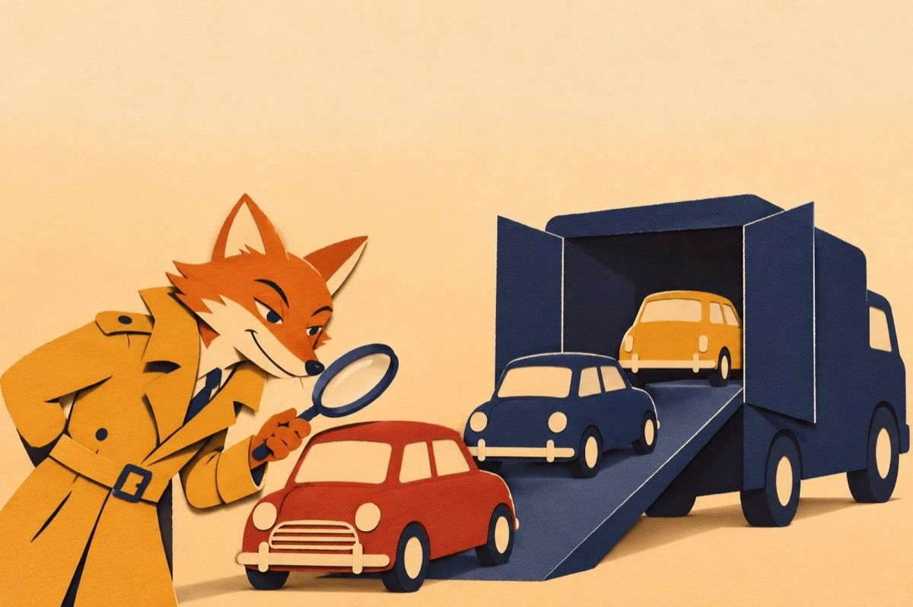
Paper cutout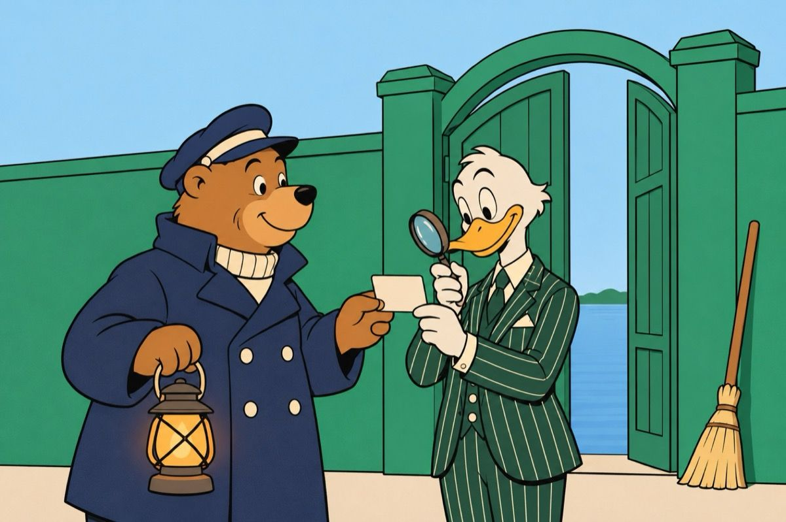
Ligne claire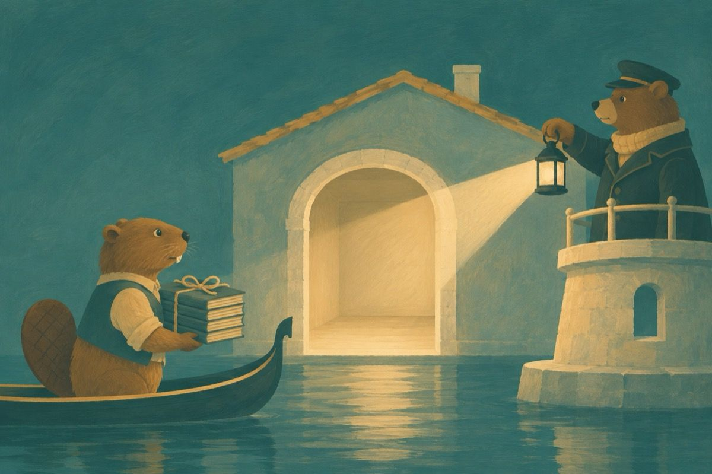
One-color gouache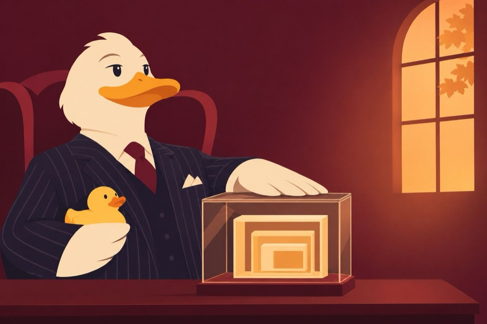
Flat editorial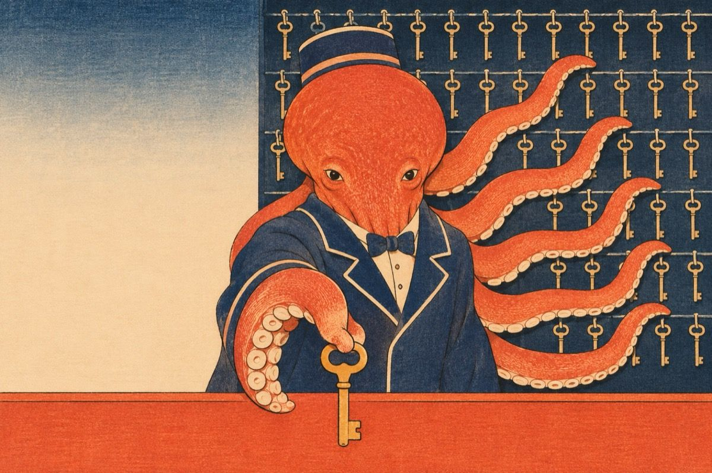
Ukiyo-e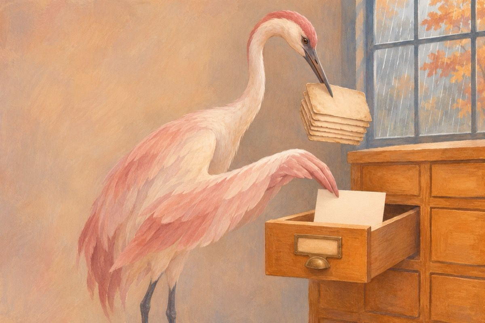
Painted storybook261 art styles, a sprinkle of fun on every PR review
Each picture takes the least-used style, and its story comes straight from the diff
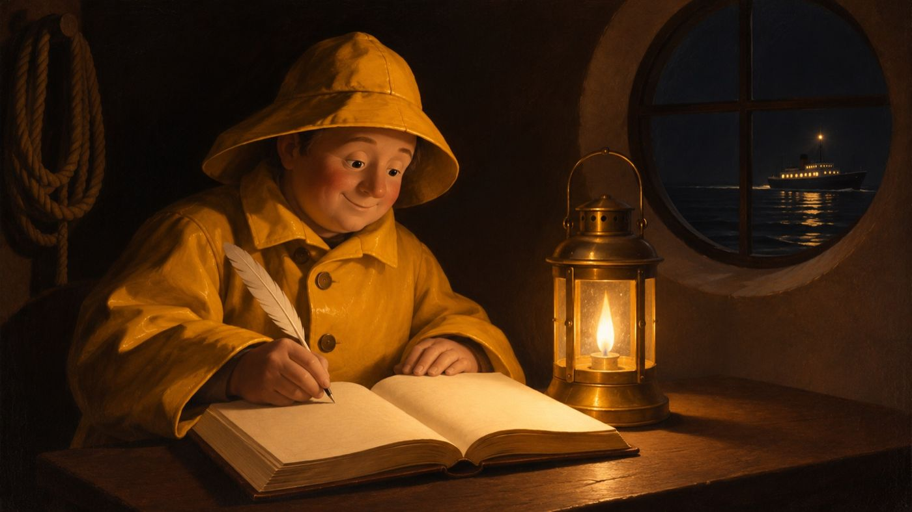
A release PRShips a release to prod
🙏 Thanks to the reviewer
💡 Join on a stable key
🛠️ Wrap sources in a dbt macro
Under each picture: what it did, thanks, a lesson, a tip
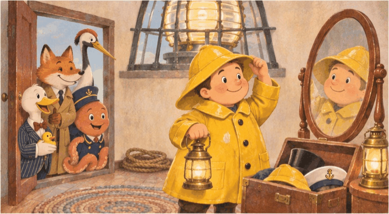
Your face, or your animal: you choose
Everyone starts as an animal totem. Pictures go to OpenAI's image model only for people who opt in
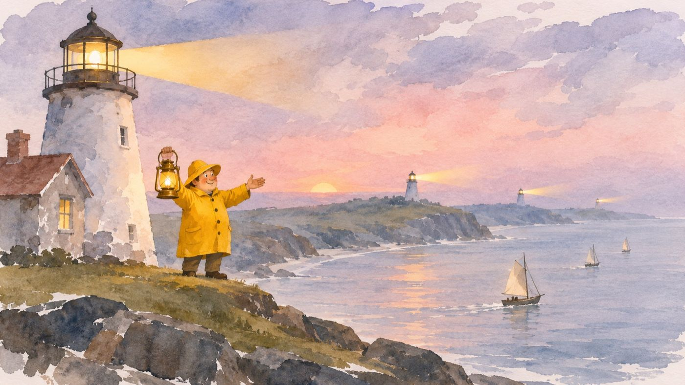
Art: Watercolour seascapeAny team can get 🔦 spotlights on its own repos with one PR
Each team lists its repos in teams/<team>.yaml; the README has a Claude Code prompt to set one up
How it's made
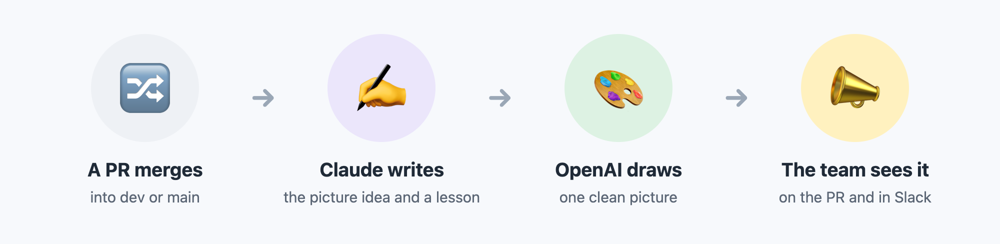
- Today: one Mac and a ChatGPT seat, through the Codex CLI
- Next: a Claude routine, an API key, a bot account
- Code, MIT licensed, to clone for your team: github.com/ngnnah/pr-spotlight